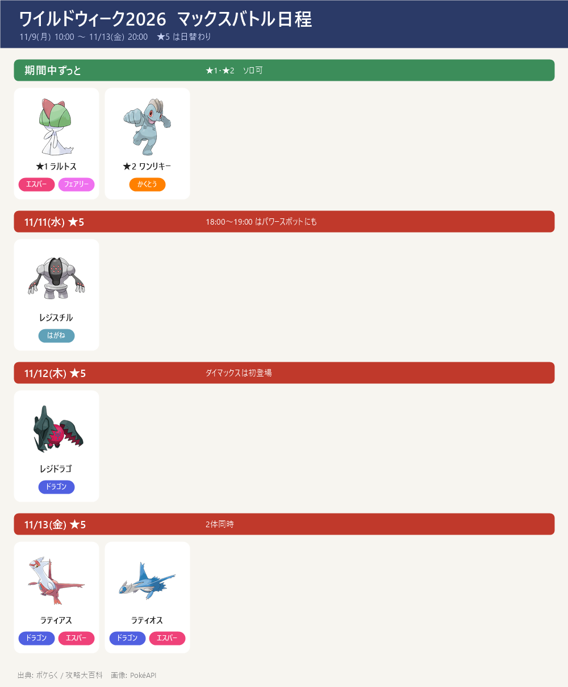
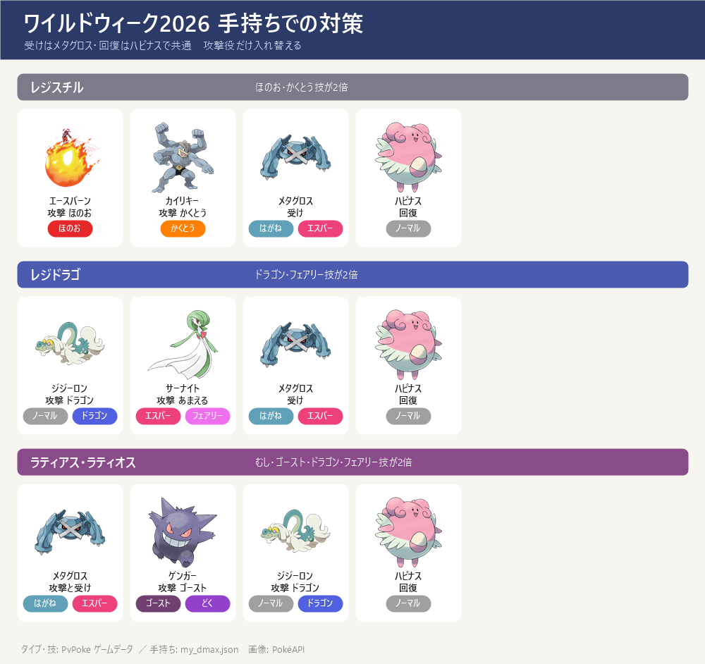
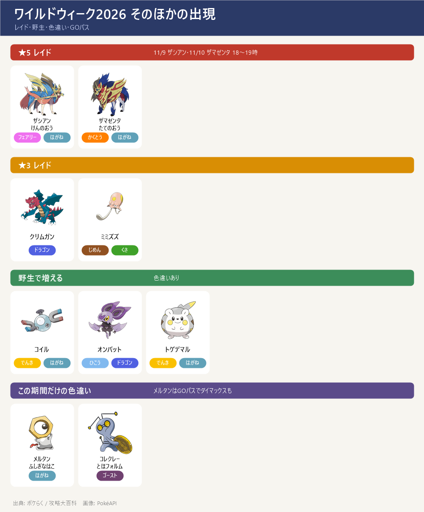

- ワイルドウィーク：11/9(月) 10:00 ～ 11/13(金) 20:00。11/14(土)・15(日) のワイルドエリア：グローバル（ディアルガ・パルキア）の前の週のイベント
- ★5 マックスバトルが日替わり：11/11(水) レジスチル → 11/12(木) レジドラゴ（ダイマックスは初登場）→ 11/13(金) ラティアス・ラティオス。★5 はその日の 18:00～19:00 にパワースポットにも出る
- 期間中ずっと：★1 ラルトス・★2 ワンリキー（どちらもダイマックス・色違いあり）
- 手持ちで組むなら：受け役はメタグロスが4体全部に使える（ドラゴン・エスパー・はがね技を半分にする）、回復はハピナス。攻撃役はボスごとに入れ替える（下の表）
- ディアルガ戦の準備と重なる：レジドラゴ・ラティ戦の攻撃役（ジジーロン・サーナイト）はパルキア戦と同じ顔ぶれ。11/14 の前にマックス粒子を使い切らないよう注意
- ★5 のボスごとの攻略ページ（技・受け役・1発のダメージ・並び）：ダイマックス レジスチル／レジドラゴ／ラティアス／ラティオス。★1・★2 はこのページのまとめだけ
マックスバトルの日程

- ★1 ラルトス・★2 ワンリキー：期間中（11/9～11/13）。ソロで倒せる
- ★5：11/11(水) レジスチル／11/12(木) レジドラゴ／11/13(金) ラティアス・ラティオス。各日 18:00～19:00 はパワースポットにも出る（★5 は4人まで・知り合いと時間を合わせる）
- この期間に捕まえると特別な技：レジスチル＝メタルクロー（通常技）、レジドラゴ＝りゅうのいぶき（通常技）、ラティアス＝ミストボール、ラティオス＝ラスターパージ
- 全部のボスに色違いあり。低い確率でスペシャル背景がつくことがある（レジスチル・レジドラゴ・ラティアス・ラティオス）
手持ちでの対策（ボスごと）

- レジスチル（はがね）弱点：ほのお・かくとう・じめん。使う技：ラスターカノン・きあいだま・はかいこうせん・でんじほう → 攻撃はエースバーン（キョダイカキュウ）とカイリキー（ダイナックル）。受けはメタグロス（ハピナスは、きあいだまが弱点なので回復だけ）
- レジドラゴ（ドラゴン）弱点：こおり・ドラゴン・フェアリー。使う技：げきりん・りゅうのはどう・ワイドブレイカー・ドラゴンエナジー・はかいこうせん・はさむ → 攻撃はジジーロン（通常技がドラゴンブレスのとき）・サーナイト（通常技があまえるのとき）。受けはメタグロス（全部の技を半分に抑える）
- ラティアス・ラティオス（ドラゴン・エスパー）弱点：むし・ゴースト・あく・こおり・ドラゴン・フェアリー → メタグロスの通常技れんぞくぎり＝ダイワームが2倍。攻撃も受けもメタグロス、ほかにゲンガー（ダイホロウ）・ジジーロン・サーナイト
- ★1 ラルトス → ゲンガー（ダイホロウ・2倍）／★2 ワンリキー → サーナイト（ダイサイコ・2倍）
- 宿題（ディアルガ・パルキア戦と共通）：ジジーロンの通常技を確認、サーナイトにあまえる（わざマシン）、メタグロス・ハピナスのダイウォールを上げる
そのほか（レイド・野生・色違い・GOパス）

- ★5 レイド：ザシアン(けんのおう)・ザマゼンタ(たてのおう)。レイドアワー 11/9(月) 18:00～19:00 ザシアン、11/10(火) 18:00～19:00 ザマゼンタ。勝つとソードエナジー・シールドエナジーが手に入る
- ★3 レイド：クリムガン・ミミズズ ／ 野生で増える：コイル・オンバット・トゲデマル（全部色違いあり）
- 色違いのメルタン（ふしぎなはこ・開ける間隔も短くなる）と色違いのコレクレー(とほフォルム)（だいじなたからばこ）：この期間だけ。11/15(日) 18:00 まで
- GOパス：ワイルドウィーク：無料版でもダイマックスメルタンがもらえる。有料のデラックスはぎんのおうかん（個体値を1つ選んで変えられる）・追加のメルタンなど。値段は両サイトとも未掲載
- リモートレイド：11/9～11/13 は1日30回まで、11/14・15 は上限なし
- グローバルチャレンジ（レイド・マックスバトルに挑む）を達成すると、マックスバトルのメーターが溜まりやすくなる
- このあと 11/14(土) ダイマックス ディアルガ ／ 11/15(日) ダイマックス パルキア → 攻略ページ（ワイルドエリア2026・ダイマックス ディアルガ／パルキア）
出典: イベント: ポケらく post164755・攻略大百科 archives/120451（両方で一致した内容のみ）／タイプ・技: PvPoke ゲームデータ ／ 手持ち: my_dmax.json
画像: PokéAPI ／ 更新 2026-10-16